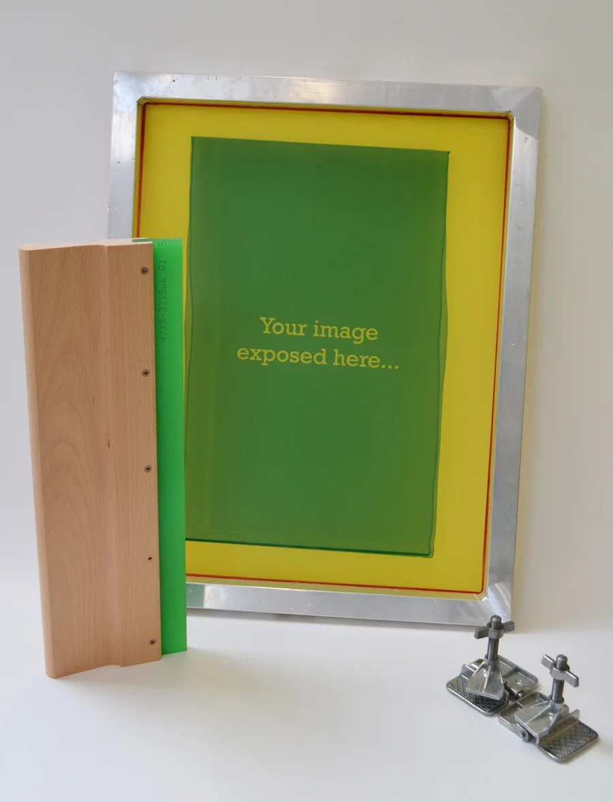
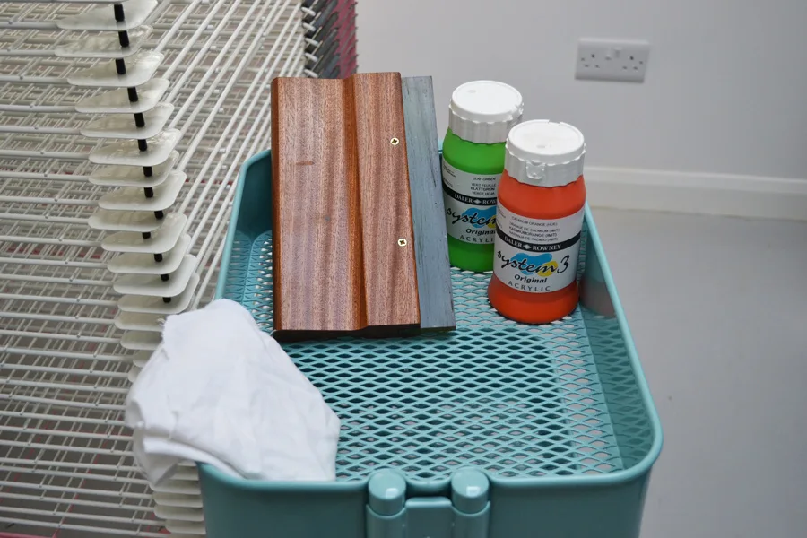

Una pantalla de serigrafía es una imagen que todavía puede convertirse en muchas. El marco mantiene la superficie y la matriz decide por dónde pasa la tinta. Lo que veremos impreso depende también del soporte, del registro y de la operación de cada pasada. Empezar por esa herramienta cambia la pregunta habitual sobre un afiche: además de qué dice, importa cómo consigue repetirse y dónde podrá aparecer.
Los registros de la Fundación Museo Reina Sofía incluyen un conjunto de afiches del Taller Popular de Serigrafía argentino realizados entre 2002 y 2007. Otra relación institucional, publicada en el BOE, enumera materiales sobre papel y tela, además de registros audiovisuales. Es una evidencia acotada pero significativa: la producción del colectivo no queda descrita adecuadamente mediante una única lámina desprendida de sus soportes y procesos. [1] [2]
Para esta lectura no reproducimos esos afiches, cuyos permisos no se han documentado. Las fotografías muestran herramientas de impresión en otro contexto. La diferencia es importante: una pantalla genérica permite explicar una operación, pero no prueba cómo trabajó el TPS en una jornada concreta. Reconocer el límite de las imágenes evita convertir la semejanza técnica en una atribución histórica.


La serigrafía obliga a resolver la imagen de acuerdo con su reproducción. Separar colores supone pensar capas; registrar una segunda pasada exige mantener relaciones entre ellas. Una forma demasiado dependiente de un detalle puede perderse al cambiar de escala o de superficie. Estas restricciones no determinan un único estilo, pero sí introducen decisiones que la imagen digital terminada puede esconder.
Cuando una gráfica busca circular, el soporte modifica su relación con el cuerpo. Un papel pegado se encuentra en un recorrido; una tela puede moverse con quien la lleva. No podemos atribuir una recepción uniforme a esos usos, pero sí reconocer que piden composiciones diferentes. Tamaño, contraste y distancia de lectura forman parte de la enunciación, tanto como las palabras elegidas.
El Museo Reina Sofía incluye experiencias del TPS dentro de una conversación sobre acción gráfica. Esa localización permite distinguir una práctica de intervención de la simple decoración de un objeto. La imagen participa en una situación y se dirige a alguien. Para comprender una pieza específica harían falta fecha, lugar, responsables y condiciones de circulación; la categoría general de gráfica política no reemplaza esos datos. [3]
La autoría colectiva tampoco debería convertirse en anonimato automático. Un nombre compartido puede reunir tareas distintas: decidir el mensaje, dibujar, preparar matrices, imprimir y distribuir. Sin testimonios o registros de cada acción no corresponde inventar cómo se repartieron. Sí conviene que una investigación pregunte por ese reparto, porque ayuda a entender qué conocimiento hizo posible la producción y quién tuvo capacidad de decidir.


La entrada al museo cambia la situación de lectura. Una pieza que antes pudo estar asociada a una acción se conserva, se inventaría y se observa a otra distancia. Esa transformación puede proteger materiales y permitir su estudio. También puede separar la imagen de los conflictos y relaciones que le daban sentido. Un montaje responsable necesita devolver contexto sin afirmar que puede reconstruir íntegramente una experiencia pasada.
Para quien diseña hoy una publicación o una campaña colectiva, el aprendizaje útil no consiste en imitar un aspecto urgente mediante tinta irregular y tipografía áspera. Consiste en acordar el propósito, comprobar la reproducción y resolver cómo se atribuye y distribuye el trabajo. La aparente imperfección puede ser un resultado del proceso; fabricarla como estilo no produce por sí sola una práctica compartida.
La matriz ofrece una medida concreta del proyecto: una imagen está preparada para volver a aparecer. Pero la repetición necesita personas, materiales y lugares que la sostengan. Pensar la gráfica desde esa cadena permite valorar el diseño sin reducirlo a una firma o a una consigna. El afiche importa también por las operaciones que deja disponibles para que otras manos lo pongan en circulación.
Fuentes.
- Fundación Museo Reina Sofía — registro de adquisiciones: Taller Popular de Serigrafía
- Boletín Oficial del Estado — BOE-A-2019-2168: relación de obras y soportes
- Museo Reina Sofía — Acción gráfica: revueltas y antifascismos
Ensayo a partir de registros institucionales. No se reproducen obras del TPS sin permiso documentado. Las dos fotografías muestran herramientas en otro contexto, no acciones del colectivo argentino.
Fuentes consultadas el 15.11.2026. Análisis e interpretación: RUMMOR. Edición privada para revisión.